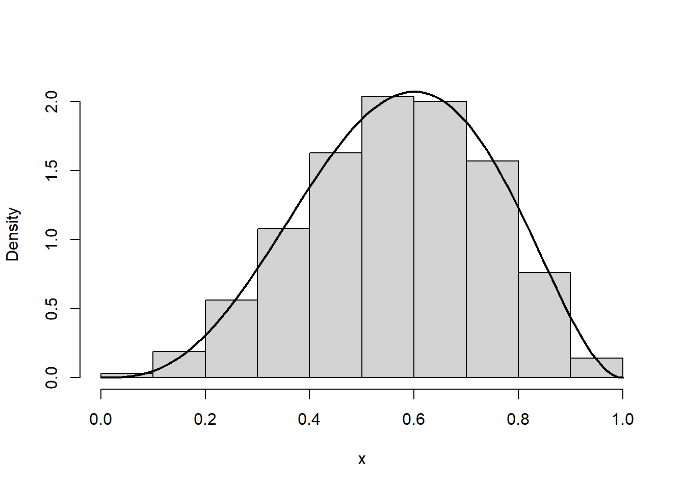

r_uniformeV <- function(){
x <- c(NA,NA)
while( is.na( x[1]) ){
# gerando um ponto de S
u <- runif(2)
# verificando o ponto está em V
if( sum( (u -.5)^2) < 1/4){
x <- u
}
}
return(x)
} 6 Método da uniforme multivariada com marginais não uniformes
Nesta aula vamos discutir como simular \(X\) a partir de uma distribuição uniforme multivariada. Esse método é a base para do método da aceitação/rejeição que será discutido posteriormente.
6.1 Funções indicadoras
Seja \(S\subset \mathbb{R}^d\). A função \(I_S:\mathbb{R}^d\rightarrow\{0,1\}\), dada por
\[I_S(x)=\left\{\begin{array}{ll}1,&x\in S\\ 0,& x\in S^c\end{array}\right.\] é denominada função indicadora de \(S\)
Propriedades
\(I_A(x)I_B(x)=I_{A\cap B}(x)\)
\(\int_A f(x)dx=\int_{\mathbb{R}^d}I_A(x)f(x)dx\)
6.2 Distribuição uniforme multivariada
Seja \(S\subset \mathbb{R}^d\) satisfazendo
\[0<\int_{\mathbb{R}^d} I_S(x)dx<\infty.\] A integral acima é denominada volume de \(S\) e é denotada por Vol(\(S\)).
Dizemos que o vetor \(\boldsymbol{X}\) tem distribuição uniforme multivariada no conjunto \(S\) se sua densidade é dada por
\[f(\boldsymbol{x})=Vol(S)^{-1}I_S(\boldsymbol{x}).\]
Neste caso, dizemos que \(\boldsymbol{X}\sim\)Uniforme(\(S\)).
Lema Seja \(V\subset S\). Se \(\boldsymbol{X}\sim\)Uniforme(\(S\)), então \(\boldsymbol{X}|\boldsymbol{X}\in V\sim\)Uniforme(\(V\)).
Considere que é fácil simular pontos uniformemente distribuídos em \(S\). Então, podemos simular pontos de uma região mais complicada \(V\subset S\) com o seguinte algoritmo:
Algoritmo.
Simule \(u\sim\)Uniforme(\(S\))
Se \(u\in V\), faça \(x=u\). Senão, volte ao passo 1.
Example 6.1 Vamos ilustrar o algoritmo acima simulando pontos uniformemente distribuídos dentro da circunferência de centro (1/2,1/2) e raio 1/2, isto é
\[f(\boldsymbol{x})=\frac{4}{\pi}I_V(\boldsymbol{x}),\] com \[V=\{x\in \mathbb{R}^2:(x_1−1/2)^2+(x_2−1/2)^2<1/4\}.\]
Notemos que \(V\subset S\), onde
\[S=\{\boldsymbol{x}\in\mathbb{R}^2:x_i∈(0,1),i=1,2\}\] Notemos ainda que, se \(U_1,U_2\sim\)Uniforme(0,1) são independentes, então a densidade do vetor \(\boldsymbol{U}=(U_1,U_2)\) é dada por
\[f_\boldsymbol{U}(\boldsymbol{u})=f_{U_1}(u_1)f_{U_2}(u_2)=I_{(0,1)}(u_1)I_{(0,1)}(u_2)=I_S(\boldsymbol{u})\]
Então, podemos simular \(\boldsymbol{X}\)∼Uniforme(\(V\)) com o seguinte algoritmo:
Vamos gerar 1000 pontos uniformes em \(V\):
x <- sapply( 1:1000, function(x) r_uniformeV() )
oo <- par( pty = "s" )
plot(x[1,],x[2,] , xlab= "x1", ylab="x2")
par(oo) Note que o algoritmo dado simula um candidato no passo 1 e decide se aceita ou não esse candidato no passo 2. A probabilidade do candidato ser aceito é
\[P(\boldsymbol{X}\in V)=\frac{1}{Vol(S)}\int_V I_S(x)d\boldsymbol{x}=\frac{Vol(V)}{Vol(S)}\]
Essa probabilidade de aceitação é um indicador da qualidade do gerador. Em geral, desejamos que essa probabilidade esteja próxima de 1. No exemplo anterior, tal probabilidade foi igual a \(\pi/4\approx 0,78.\)
Alternativamente, podemos definir \(T\) como sendo o número de tentativas até a geração de \(X\). Isto implica que\(T\sim \hbox{Geométrica}(P(\boldsymbol{X}\in V))\) e o número médio de tentativas é dado por \(1/P(X\in V)\). No exemplo anterior, o número médio de tentativas era \(4/\pi\approx 1,27\).
Exercício. Considere o conjunto
\[V=\{(x,y)\in[-3,3]^2:|y|<e^{-|x|}\} \]
Simule uma amostra de tamanho 5000 de pontos uniformes em \(V\).
6.3 Método da uniforme multivariada com marginais não uniformes
Suponha que desejamos simular o vetor \(\boldsymbol{X}\subset \mathbb{R}^d\) com densidade \(f(\boldsymbol{x})\). Considere o conjunto
\[V=\{(\boldsymbol{x},u):x\in\mathbb{R}^d,0<u<f(\boldsymbol{x})\}.\] Note que
\[Vol(V)=\int_{\mathbb{R}^d}\int_{0}^{f(\boldsymbol{x})}1dudx=\int_{\mathbb{R}^d}f(\boldsymbol{x})d\boldsymbol{x}=1\]
Seja \((\boldsymbol{X},U)\) um vetor aleatório uniformemente distribuído em \(V\), com densidade dada por
\[f_{\boldsymbol{X},U}(\boldsymbol{x},u)=Vol(V)^{-1}I_V(\boldsymbol{x},u)=I_V(\boldsymbol{x},u).\] Notemos que
\[\int_{0}^{f(\boldsymbol{x})}f_{\boldsymbol{X},U}(x,u)du=\int_0^{f(\boldsymbol{x})}du=f(\boldsymbol{x}).\] então, a distribuição marginal de \(X\) tem densidade \(f(.)\). Então, se é fácil simular \((\boldsymbol{X},U)\)∼Uniforme(\(S\)), com \(V\subset S\), podemos simular \(\boldsymbol{X}\) com o seguinte algoritmo:
Método da uniforme multivariada com marginais não uniformes
Gere \((y,u)\sim\)Uniforme(\(S\))
Se \((y,u)\in V\), faça \(x=y\). Senão, retorne ao passo 1.
Em geral, escolhemos uma região \(S\) simples, como um hipercubo, pois o passo 1 do algoritmo acima é resolvido a partir da simulação de uniformes univariadas independentes.
Example 6.2 Considere o problema de simular \(X\), com densidade dada por
\[f(x)=60x^3(1−x)^2,\]
com \(x\in(0,1)\). Seja
\[V=\{(x,u):0<x<1,0<u<60x^3(1−x)^2\}.\]
Vamos definir \[S=\{(x,u):0<x<1,0<u<M\},\]
onde \(M\) é o valor máximo de \(f(.)\). Embora encontrar \(M\) seja um exercício simples de cálculo, vamos realizar essa tarefa numericamente, utilizando a função optim, pelo método de Brent:
# densidade de interesse
f <- function(x) 60* x^3 * (1-x)^2
# menos a densidade de interesse
mf <- function(x) -f(x)
# encontrando o mínimo local
optim( .5, mf, lower = 0, upper =1, method = 'Brent')$par
[1] 0.6
$value
[1] -2.0736
$counts
function gradient
NA NA
$convergence
[1] 0
$message
NULLPortanto, tomaremos \(S\) como
\[S=\{(x,u):0<x<1,0<u<2,0736\}\]
onde pode-se constatar que \(V\subset S\). A função abaixo gera uma observação de \(X\):
rf <- function(){
x <- NA
while( is.na(x) == T){
# passo 1: gerando de (y,u)~Uniforme(S)
y <- runif(1)
u <- runif(1, 0, 2.0736)
# passo 2: testando o candidado
if( u < f(y)){ x <- y}
}
return(x)
}Abaixo simulamos uma amostra de tamanho 1.000 dessa distribuição
x <- sapply( 1:1000, function(x) rf() )
# histograma dos valores simulados de X
hist(x, freq = FALSE, main = "" ,ylim=c(0,2.0736), xlab = "x")
curve(f(x), add = T, lwd = 2)
Exercício Utilize o método da uniforme multivariada com marginais não uniformes para obter um simulador para a função densidade
\[f(x)=\frac{1}{\pi^2}x\cos(x)^2,\] onde \(x\in(0,2\pi)\). Implemente o simulador e obtenha uma amostra de tamanho 5.000.